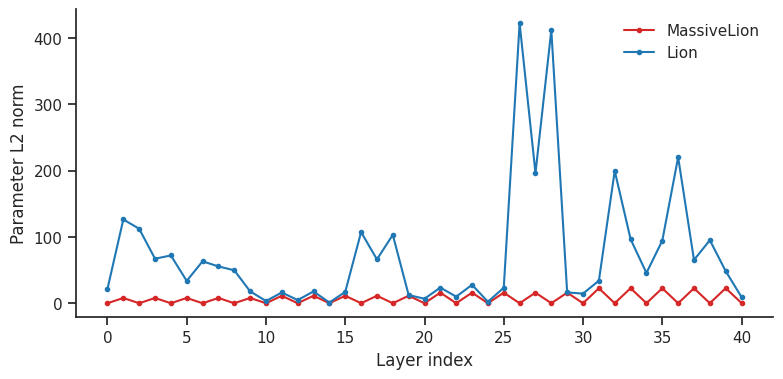

(30) Curvature analysis: MassiveLion vs. Lion (sharp)#
device = cuda:1
load runs#
from gra.experiments.common.checkpointing import resolve_resume_source, load_checkpoint
run_paths = {
"m_lion": "pal-lab/GRA-CIFAR10/ikft1odq",
"lion": "pal-lab/GRA-CIFAR10/5ljlbsbj",
}
sources = {k: resolve_resume_source(v) for k, v in run_paths.items()}
ckpts = {
k: load_checkpoint(src.checkpoint_path, map_location="cpu")
for k, src in sources.items()
}
m_lion_ckpt = ckpts["m_lion"]
lion_ckpt = ckpts["lion"]
wandb: WARNING The anonymous setting has no effect and will be removed in a future version.
wandb: ERROR Failed to detect the name of this notebook. You can set it manually with the WANDB_NOTEBOOK_NAME environment variable to enable code saving.
wandb: [wandb.Api()] Loaded credentials for https://api.wandb.ai from /home/hadi/.netrc.
m_lion_model = ckpt_to_vision_model(m_lion_ckpt)
lion_model = ckpt_to_vision_model(lion_ckpt)
from gra.figures import optimizer_color
def _param_l2(params):
return sum(p.detach().float().pow(2).sum().item() for p in params) ** 0.5
def model_param_norm(model):
return _param_l2(model.parameters())
def layer_param_norms(model):
rows = []
for layer_idx, (name, module) in enumerate(
(x for x in model.named_modules() if list(x[1].parameters(recurse=False)))
):
params = list(module.parameters(recurse=False))
rows.append((layer_idx, name, _param_l2(params)))
return pd.DataFrame(rows, columns=["layer_idx", "layer", "norm"])
models = {
"MassiveLion": m_lion_model,
"Lion": lion_model,
}
overall_norms = pd.Series(
{name: model_param_norm(model) for name, model in models.items()},
name="param_l2_norm",
).to_frame()
display(overall_norms)
layer_norms = pd.concat([
layer_param_norms(model).assign(optim=name)
for name, model in models.items()
], ignore_index=True)
fig, ax = plt.subplots(figsize=(9, 4))
for name, df in layer_norms.groupby("optim", sort=False):
ax.plot(
df["layer_idx"], df["norm"],
marker="o", ms=3, lw=1.5,
color=optimizer_color(name),
label=name,
)
ax.set(xlabel="Layer index", ylabel="Parameter L2 norm")
ax.legend(frameon=False)
sns.despine()
plt.show()
| param_l2_norm | |
|---|---|
| MassiveLion | 69.383985 |
| Lion | 768.719726 |

curvature metrics (unnormalized)#
from types import SimpleNamespace
from gra.utils.dataset import make_dataloader
from gra.experiments.common.optim_factory import configure_optimizer
from gra.experiments.diagnostics.curvature_diagnostics import prepare_curvature_batch
from gra.experiments.diagnostics.diagnostic_logging import compute_final_curvature_outputs
CURVATURE_BATCH_SIZE = 2048
HUTCHINSON_SAMPLES = 32
LANCZOS_STEPS = 48
RANDOM_DIRS = 32
torch.manual_seed(0)
def _args_dict(ckpt):
args = ckpt.get("args", {})
return args if isinstance(args, dict) else vars(args)
def _arg(ckpt, *names, default=None):
args = _args_dict(ckpt)
for name in names:
if name in args:
return args[name]
return default
def curvature_args(ckpt):
return SimpleNamespace(
optim=_arg(ckpt, "optim", "optimizer"),
lr=_arg(ckpt, "lr", default=1e-3),
wd=_arg(ckpt, "wd", "weight_decay", default=0.0),
beta1=_arg(ckpt, "beta1", default=0.9),
beta2=_arg(ckpt, "beta2", default=0.99),
beta3=_arg(ckpt, "beta3", default=0.999),
mass=_arg(ckpt, "mass", default=0.0),
kappa=_arg(ckpt, "kappa", default=0.0),
curvature_diagnostics=True,
curvature_postfit=True,
curvature_probe_batch_size=CURVATURE_BATCH_SIZE,
curvature_hutchinson_samples=HUTCHINSON_SAMPLES,
curvature_lanczos_steps=LANCZOS_STEPS,
curvature_num_top_eigvecs=8,
curvature_perturb_radii="1e-4,3e-4,1e-3,3e-3,1e-2",
curvature_random_dirs=RANDOM_DIRS,
curvature_slice_grid=0, # metrics only; set >=3 if you want figs
curvature_connectivity_ckpt="",
curvature_ece_bins=15,
)
def curvature_loss_fn(model, batch):
x, y = batch
return F.cross_entropy(model(x), y.long())
dataset = _arg(m_lion_ckpt, "dataset", default="CIFAR10")
_, val_loader = make_dataloader(dataset=dataset, batch_size=CURVATURE_BATCH_SIZE, device="cpu")
curvature_batch = prepare_curvature_batch(next(iter(val_loader)), device, CURVATURE_BATCH_SIZE)
models = {
"m_lion": m_lion_model.to(device),
"lion": lion_model.to(device),
}
ckpts = {
"m_lion": m_lion_ckpt,
"lion": lion_ckpt,
}
%%time
final_curvature = {}
for name, model in models.items():
args = curvature_args(ckpts[name])
optimizer = configure_optimizer(model, args, device)
optimizer.load_state_dict(ckpts[name].get("optim_state", ckpts[name].get("optimizer")))
model.zero_grad(set_to_none=True)
curvature_loss_fn(model, curvature_batch).backward()
metrics, figs = compute_final_curvature_outputs(
model=model,
optimizer=optimizer,
batch=curvature_batch,
loss_fn=curvature_loss_fn,
args=args,
)
final_curvature[name] = metrics
Decay params: 11,164,352, No-decay params: 9,610
Optim: MassiveLion (
Parameter Group 0
betas: (0.7, 0.99)
lr: 0.001
mass: 1.0
weight_decay: 1.0
Parameter Group 1
betas: (0.7, 0.99)
lr: 0.001
mass: 1.0
weight_decay: 0.0
)
Decay params: 11,164,352, No-decay params: 9,610
Optim: MassiveLion (
Parameter Group 0
betas: (0.9, 0.6)
lr: 0.001
mass: 0.0
weight_decay: 1.0
Parameter Group 1
betas: (0.9, 0.6)
lr: 0.001
mass: 0.0
weight_decay: 0.0
)
CPU times: user 2min 15s, sys: 38.2 s, total: 2min 53s
Wall time: 2min 53s
final_curvature_df = pd.DataFrame(final_curvature).T
final_curvature_df
| probe_loss | probe_grad_norm | ece | calibration_confidence | calibration_accuracy | calibration_count | hessian_trace | hessian_trace_per_param | hessian_trace_std | lambda_max | ... | sharpness_random_max_delta/r_1em04 | sharpness_random_mean_delta/r_3em04 | sharpness_random_max_delta/r_3em04 | sharpness_random_mean_delta/r_1em03 | sharpness_random_max_delta/r_1em03 | sharpness_random_mean_delta/r_3em03 | sharpness_random_max_delta/r_3em03 | sharpness_random_mean_delta/r_1em02 | sharpness_random_max_delta/r_1em02 | sharpness_random_auc | |
|---|---|---|---|---|---|---|---|---|---|---|---|---|---|---|---|---|---|---|---|---|---|
| m_lion | 0.259231 | 314.024109 | 0.021052 | 0.946975 | 0.934570 | 2048.0 | 6.169792e+07 | 5.521580 | 2.274384e+07 | 6.196680e+06 | ... | 0.001239 | 0.002171 | 0.004266 | 0.012819 | 0.024147 | 0.149485 | 0.264028 | 2.232827 | 2.666884 | 0.859184 |
| lion | 0.953175 | 13.051868 | 0.078248 | 0.985728 | 0.908203 | 2048.0 | 6.404906e+04 | 0.005732 | 2.869020e+04 | 1.009756e+04 | ... | 0.000662 | 0.000703 | 0.001587 | 0.002584 | 0.006016 | 0.010457 | 0.020662 | 0.069994 | 0.125732 | 0.029885 |
2 rows × 37 columns
(1) filter-normalized adversarial sharpness#
import copy
import math
import torch
import torch.nn.functional as F
from collections import OrderedDict
from gra.utils.dataset import make_dataloader
dataset = _ckpt_arg(m_lion_ckpt, "dataset", "CIFAR10")
batch_size = int(_ckpt_arg(m_lion_ckpt, "batch_size", 256))
train_loader, val_loader = make_dataloader(
dataset=dataset,
batch_size=batch_size,
device=device,
)
loader = val_loader
m_lion_model = m_lion_model.to(device).eval()
lion_model = lion_model.to(device).eval()
def _batch_loss(model, x, y):
out = model(x)
if isinstance(out, tuple):
out = out[0]
return F.cross_entropy(out, y.long())
def _eval_loss_acc(model, loader, max_batches=20):
model.eval()
total_loss = total_correct = total_n = 0
with torch.no_grad():
for bi, (x, y) in enumerate(loader):
if bi >= max_batches:
break
x, y = x.to(device), y.to(device)
logits = model(x)
if isinstance(logits, tuple):
logits = logits[0]
loss = F.cross_entropy(logits, y.long(), reduction="sum")
total_loss += loss.item()
total_correct += logits.argmax(1).eq(y).sum().item()
total_n += y.numel()
return total_loss / total_n, total_correct / total_n
def _filter_norms(param, eps=1e-12):
# Per-output-filter norm for conv/linear weights; scalar/bias gets abs value.
if param.ndim <= 1:
return param.detach().abs().clamp_min(eps)
return param.detach().flatten(1).norm(dim=1).clamp_min(eps).view(
-1, *([1] * (param.ndim - 1))
)
def _init_filter_normalized_delta(model):
delta = OrderedDict()
for name, p in model.named_parameters():
if not p.requires_grad:
continue
d = torch.randn_like(p)
d = d * (_filter_norms(p) / _filter_norms(d))
delta[name] = d
return delta
def _delta_norm(delta, model):
# Norm in filter-normalized coordinates: || delta / ||filter|| ||_2.
sq = 0.0
params = dict(model.named_parameters())
for name, d in delta.items():
scale = _filter_norms(params[name])
sq = sq + ((d / scale) ** 2).sum()
return sq.sqrt()
def _project_delta_(delta, model, rho):
norm = _delta_norm(delta, model)
if norm > rho:
scale = rho / (norm + 1e-12)
for d in delta.values():
d.mul_(scale)
def _add_delta_(model, delta, alpha=1.0):
with torch.no_grad():
for name, p in model.named_parameters():
if name in delta:
p.add_(delta[name], alpha=alpha)
def filter_normalized_adversarial_sharpness(
model,
loader,
rho=1.0,
ascent_steps=10,
ascent_lr=None,
max_batches=20,
):
"""
Returns max_{||delta/filter_norm(theta)|| <= rho}
loss(theta + delta) - loss(theta)
This is the Li et al. filter-normalized neighborhood, optimized with
projected gradient ascent, so it is much less sensitive to raw weight scale.
"""
model = copy.deepcopy(model).to(device).eval()
base_loss, base_acc = _eval_loss_acc(model, loader, max_batches=max_batches)
delta = _init_filter_normalized_delta(model)
_project_delta_(delta, model, rho)
if ascent_lr is None:
ascent_lr = rho / max(1, ascent_steps // 2)
batches = []
for bi, batch in enumerate(loader):
if bi >= max_batches:
break
x, y = batch
batches.append((x.to(device), y.to(device)))
for _ in range(ascent_steps):
_add_delta_(model, delta, alpha=1.0)
for p in model.parameters():
p.grad = None
loss = 0.0
n = 0
for x, y in batches:
batch_loss = _batch_loss(model, x, y)
loss = loss + batch_loss * y.numel()
n += y.numel()
loss = loss / n
loss.backward()
_add_delta_(model, delta, alpha=-1.0)
with torch.no_grad():
for name, p in model.named_parameters():
if name not in delta or p.grad is None:
continue
g = p.grad
# Gradient ascent in filter-normalized coordinates.
scale = _filter_norms(p)
delta[name].add_(g * scale.square(), alpha=ascent_lr)
_project_delta_(delta, model, rho)
_add_delta_(model, delta, alpha=1.0)
sharp_loss, sharp_acc = _eval_loss_acc(model, loader, max_batches=max_batches)
_add_delta_(model, delta, alpha=-1.0)
return {
"base_loss": base_loss,
"base_acc": base_acc,
"sharp_loss": sharp_loss,
"sharp_acc": sharp_acc,
"sharpness": sharp_loss - base_loss,
"relative_sharpness": (sharp_loss - base_loss) / (base_loss + 1e-12),
"rho": rho,
"ascent_steps": ascent_steps,
"max_batches": max_batches,
}
results = {}
for name, model in {
"m_lion": m_lion_model,
"lion": lion_model,
}.items():
results[name] = filter_normalized_adversarial_sharpness(
model,
loader,
rho=1.0,
ascent_steps=10,
max_batches=20,
)
results
{'m_lion': {'base_loss': 0.2558911100029945,
'base_acc': 0.9349609375,
'sharp_loss': 83.08757057189942,
'sharp_acc': 0.098828125,
'sharpness': 82.83167946189643,
'relative_sharpness': 323.6989337402281,
'rho': 1.0,
'ascent_steps': 10,
'max_batches': 20},
'lion': {'base_loss': 1.0035116523504257,
'base_acc': 0.9017578125,
'sharp_loss': 4.837953176277615e+17,
'sharp_acc': 0.10078125,
'sharpness': 4.837953176277615e+17,
'relative_sharpness': 4.8210234180553216e+17,
'rho': 1.0,
'ascent_steps': 10,
'max_batches': 20}}
rhos = [1e-4, 3e-4, 1e-3, 3e-3, 1e-2, 3e-2, 1e-1, 3e-1]
sharpness_sweep = {}
for rho in rhos:
sharpness_sweep[rho] = {
name: filter_normalized_adversarial_sharpness(
model,
loader,
rho=rho,
ascent_steps=10,
max_batches=20,
)
for name, model in {
"m_lion": m_lion_model,
"lion": lion_model,
}.items()
}
for rho, res in sharpness_sweep.items():
print(f"\nrho={rho:g}")
for name, r in res.items():
print(
name,
"base_loss", r["base_loss"],
"sharp_loss", r["sharp_loss"],
"sharpness", r["sharpness"],
"base_acc", r["base_acc"],
"sharp_acc", r["sharp_acc"],
)
rho=0.0001
m_lion base_loss 0.2558911100029945 sharp_loss 0.25599602088332174 sharpness 0.00010491088032721363 base_acc 0.9349609375 sharp_acc 0.93515625
lion base_loss 1.0035116523504257 sharp_loss 1.0080619752407074 sharpness 0.004550322890281677 base_acc 0.9017578125 sharp_acc 0.9015625
rho=0.0003
m_lion base_loss 0.2558911100029945 sharp_loss 0.25619818568229674 sharpness 0.0003070756793022156 base_acc 0.9349609375 sharp_acc 0.9349609375
lion base_loss 1.0035116523504257 sharp_loss 1.0174870610237121 sharpness 0.013975408673286394 base_acc 0.9017578125 sharp_acc 0.9009765625
rho=0.001
m_lion base_loss 0.2558911100029945 sharp_loss 0.25693090856075285 sharpness 0.0010397985577583202 base_acc 0.9349609375 sharp_acc 0.9349609375
lion base_loss 1.0035116523504257 sharp_loss 1.0551270306110383 sharpness 0.05161537826061258 base_acc 0.9017578125 sharp_acc 0.9005859375
rho=0.003
m_lion base_loss 0.2558911100029945 sharp_loss 0.2593404524028301 sharpness 0.0034493423998355754 base_acc 0.9349609375 sharp_acc 0.9328125
lion base_loss 1.0035116523504257 sharp_loss 1.890678095817566 sharpness 0.8871664434671402 base_acc 0.9017578125 sharp_acc 0.8361328125
rho=0.01
m_lion base_loss 0.2558911100029945 sharp_loss 0.27197366282343866 sharpness 0.01608255282044413 base_acc 0.9349609375 sharp_acc 0.929296875
lion base_loss 1.0035116523504257 sharp_loss 9.359491729736328 sharpness 8.355980077385903 base_acc 0.9017578125 sharp_acc 0.5119140625
rho=0.03
m_lion base_loss 0.2558911100029945 sharp_loss 0.36208330243825915 sharpness 0.10619219243526462 base_acc 0.9349609375 sharp_acc 0.9056640625
lion base_loss 1.0035116523504257 sharp_loss 2697653721.6 sharpness 2697653720.5964885 base_acc 0.9017578125 sharp_acc 0.10078125
rho=0.1
m_lion base_loss 0.2558911100029945 sharp_loss 2.0493740022182463 sharpness 1.7934828922152517 base_acc 0.9349609375 sharp_acc 0.5494140625
lion base_loss 1.0035116523504257 sharp_loss 128872773632.0 sharpness 128872773630.99649 base_acc 0.9017578125 sharp_acc 0.10078125
rho=0.3
m_lion base_loss 0.2558911100029945 sharp_loss 9.961841917037964 sharpness 9.705950807034968 base_acc 0.9349609375 sharp_acc 0.098828125
lion base_loss 1.0035116523504257 sharp_loss 64390617785958.4 sharpness 64390617785957.4 base_acc 0.9017578125 sharp_acc 0.10078125
(2) function-space KL sensitivity#
from gra.utils.dataset import make_dataloader
dataset = _ckpt_arg(m_lion_ckpt, "dataset", "CIFAR10")
batch_size = int(_ckpt_arg(m_lion_ckpt, "batch_size", 256))
train_loader, val_loader = make_dataloader(
dataset=dataset,
batch_size=batch_size,
device=device,
)
loader = val_loader
import copy
import torch
import torch.nn.functional as F
from collections import OrderedDict
def _logits(model, x):
out = model(x)
return out[0] if isinstance(out, tuple) else out
def _filter_norms(param, eps=1e-12):
if param.ndim <= 1:
return param.detach().abs().clamp_min(eps)
return param.detach().flatten(1).norm(dim=1).clamp_min(eps).view(
-1, *([1] * (param.ndim - 1))
)
def _init_delta(model):
delta = OrderedDict()
for name, p in model.named_parameters():
if p.requires_grad:
d = torch.randn_like(p)
d = d * (_filter_norms(p) / _filter_norms(d))
delta[name] = d
return delta
def _delta_norm(delta, model):
sq = 0.0
params = dict(model.named_parameters())
for name, d in delta.items():
sq = sq + ((d / _filter_norms(params[name])) ** 2).sum()
return sq.sqrt()
def _project_delta_(delta, model, rho):
n = _delta_norm(delta, model)
if n > rho:
s = rho / (n + 1e-12)
for d in delta.values():
d.mul_(s)
def _add_delta_(model, delta, alpha=1.0):
with torch.no_grad():
for name, p in model.named_parameters():
if name in delta:
p.add_(delta[name], alpha=alpha)
@torch.no_grad()
def _base_probs(model, batches):
probs = []
losses = []
accs = []
n_total = 0
for x, y in batches:
z = _logits(model, x)
p = z.softmax(dim=1)
probs.append(p.detach())
losses.append(F.cross_entropy(z, y.long(), reduction="sum").item())
accs.append(z.argmax(1).eq(y).sum().item())
n_total += y.numel()
return {
"probs": probs,
"loss": sum(losses) / n_total,
"acc": sum(accs) / n_total,
}
def _mean_kl_to_base(model, batches, base_probs):
total_kl = 0.0
total_n = 0
for (x, y), p0 in zip(batches, base_probs):
z = _logits(model, x)
logp = F.log_softmax(z, dim=1)
kl = (p0 * (p0.clamp_min(1e-12).log() - logp)).sum(dim=1)
total_kl = total_kl + kl.sum()
total_n += x.shape[0]
return total_kl / total_n
@torch.no_grad()
def _eval_after_delta(model, batches, base_probs):
total_kl = 0.0
total_loss = 0.0
total_correct = 0
total_n = 0
for (x, y), p0 in zip(batches, base_probs):
z = _logits(model, x)
logp = F.log_softmax(z, dim=1)
kl = (p0 * (p0.clamp_min(1e-12).log() - logp)).sum(dim=1)
total_kl += kl.sum().item()
total_loss += F.cross_entropy(z, y.long(), reduction="sum").item()
total_correct += z.argmax(1).eq(y).sum().item()
total_n += y.numel()
return {
"kl": total_kl / total_n,
"loss": total_loss / total_n,
"acc": total_correct / total_n,
}
def filter_normalized_adversarial_kl(
model,
loader,
rho=1e-3,
ascent_steps=10,
ascent_lr=None,
max_batches=20,
):
model = copy.deepcopy(model).to(device).eval()
batches = []
for bi, (x, y) in enumerate(loader):
if bi >= max_batches:
break
batches.append((x.to(device), y.to(device)))
base = _base_probs(model, batches)
delta = _init_delta(model)
_project_delta_(delta, model, rho)
if ascent_lr is None:
ascent_lr = rho / max(1, ascent_steps // 2)
for _ in range(ascent_steps):
_add_delta_(model, delta, alpha=1.0)
for p in model.parameters():
p.grad = None
kl = _mean_kl_to_base(model, batches, base["probs"])
kl.backward()
_add_delta_(model, delta, alpha=-1.0)
with torch.no_grad():
for name, p in model.named_parameters():
if name not in delta or p.grad is None:
continue
scale = _filter_norms(p)
delta[name].add_(p.grad * scale.square(), alpha=ascent_lr)
_project_delta_(delta, model, rho)
_add_delta_(model, delta, alpha=1.0)
pert = _eval_after_delta(model, batches, base["probs"])
_add_delta_(model, delta, alpha=-1.0)
return {
"base_loss": base["loss"],
"base_acc": base["acc"],
"pert_loss": pert["loss"],
"pert_acc": pert["acc"],
"kl": pert["kl"],
"rho": rho,
"ascent_steps": ascent_steps,
"max_batches": max_batches,
}
rhos = [1e-4, 3e-4, 1e-3, 3e-3, 1e-2, 3e-2]
kl_sweep = {}
for rho in rhos:
kl_sweep[rho] = {
name: filter_normalized_adversarial_kl(
model,
loader,
rho=rho,
ascent_steps=10,
max_batches=20,
)
for name, model in {
"m_lion": m_lion_model,
"lion": lion_model,
}.items()
}
for rho, res in kl_sweep.items():
print(f"\nrho={rho:g}")
for name, r in res.items():
print(
name,
"KL", r["kl"],
"base_acc", r["base_acc"],
"pert_acc", r["pert_acc"],
"base_loss", r["base_loss"],
"pert_loss", r["pert_loss"],
)
rho=0.0001
m_lion KL 2.412677955199172e-08 base_acc 0.9349609375 pert_acc 0.9349609375 base_loss 0.2558911100029945 pert_loss 0.255889481306076
lion KL 0.0009067543447599747 base_acc 0.9017578125 pert_acc 0.9017578125 base_loss 1.0035116523504257 pert_loss 1.0023676186800003
rho=0.0003
m_lion KL 2.7042593075954356e-08 base_acc 0.9349609375 pert_acc 0.9349609375 base_loss 0.2558911100029945 pert_loss 0.25589281395077706
lion KL 0.01014529198873788 base_acc 0.9017578125 pert_acc 0.902734375 base_loss 1.0035116523504257 pert_loss 1.0084186017513275
rho=0.001
m_lion KL 3.311877914136119e-08 base_acc 0.9349609375 pert_acc 0.9349609375 base_loss 0.2558911100029945 pert_loss 0.25588993951678274
lion KL 0.05296916849911213 base_acc 0.9017578125 pert_acc 0.8955078125 base_loss 1.0035116523504257 pert_loss 1.00513037443161
rho=0.003
m_lion KL 8.378179394696872e-08 base_acc 0.9349609375 pert_acc 0.9349609375 base_loss 0.2558911100029945 pert_loss 0.2558815270662308
lion KL 0.33152372017502785 base_acc 0.9017578125 pert_acc 0.8794921875 base_loss 1.0035116523504257 pert_loss 1.1726521849632263
rho=0.01
m_lion KL 7.598999377478321e-06 base_acc 0.9349609375 pert_acc 0.93515625 base_loss 0.2558911100029945 pert_loss 0.25607799738645554
lion KL 3.878254699707031 base_acc 0.9017578125 pert_acc 0.6380859375 base_loss 1.0035116523504257 pert_loss 4.325893342494965
rho=0.03
m_lion KL 0.03587683262303472 base_acc 0.9349609375 pert_acc 0.924609375 base_loss 0.2558911100029945 pert_loss 0.28081557154655457
lion KL 57982259200.0 base_acc 0.9017578125 pert_acc 0.10078125 base_loss 1.0035116523504257 pert_loss 58549454438.4
(3) thermal weight-noise susceptibility#
from gra.utils.dataset import make_dataloader
dataset = _ckpt_arg(m_lion_ckpt, "dataset", "CIFAR10")
batch_size = int(_ckpt_arg(m_lion_ckpt, "batch_size", 256))
train_loader, val_loader = make_dataloader(
dataset=dataset,
batch_size=batch_size,
device=device,
)
loader = val_loader
import copy
import torch
import torch.nn.functional as F
from collections import OrderedDict
def _logits(model, x):
z = model(x)
return z[0] if isinstance(z, tuple) else z
def _filter_norms(param, eps=1e-12):
if param.ndim <= 1:
return param.detach().abs().clamp_min(eps)
return param.detach().flatten(1).norm(dim=1).clamp_min(eps).view(
-1, *([1] * (param.ndim - 1))
)
def _random_filter_normalized_delta(model, rho):
delta = OrderedDict()
sq = 0.0
for name, p in model.named_parameters():
if not p.requires_grad:
continue
scale = _filter_norms(p)
u = torch.randn_like(p)
d = u * scale
delta[name] = d
sq = sq + ((d / scale) ** 2).sum()
norm = sq.sqrt()
for d in delta.values():
d.mul_(rho / (norm + 1e-12))
return delta
def _add_delta_(model, delta, alpha=1.0):
with torch.no_grad():
for name, p in model.named_parameters():
if name in delta:
p.add_(delta[name], alpha=alpha)
@torch.no_grad()
def _base_state(model, batches):
probs = []
total_loss = 0.0
total_correct = 0
total_n = 0
for x, y in batches:
y = y.long()
z = _logits(model, x)
p = z.softmax(dim=1)
probs.append(p.detach())
total_loss += F.cross_entropy(z, y.long(), reduction="sum").item()
total_correct += z.argmax(1).eq(y).sum().item()
total_n += y.numel()
return {
"probs": probs,
"loss": total_loss / total_n,
"acc": total_correct / total_n,
}
@torch.no_grad()
def _eval_thermal_sample(model, batches, base_probs):
total_kl = 0.0
total_loss = 0.0
total_correct = 0
total_n = 0
for (x, y), p0 in zip(batches, base_probs):
y = y.long()
z = _logits(model, x)
logp = F.log_softmax(z, dim=1)
kl = (p0 * (p0.clamp_min(1e-12).log() - logp)).sum(dim=1)
total_kl += kl.sum().item()
total_loss += F.cross_entropy(z, y.long(), reduction="sum").item()
total_correct += z.argmax(1).eq(y).sum().item()
total_n += y.numel()
return {
"kl": total_kl / total_n,
"loss": total_loss / total_n,
"acc": total_correct / total_n,
}
def filter_normalized_thermal_susceptibility(
model,
loader,
rho=1e-2,
samples=20,
max_batches=20,
):
model = copy.deepcopy(model).to(device).eval()
batches = []
for bi, (x, y) in enumerate(loader):
if bi >= max_batches:
break
batches.append((x.to(device), y.to(device)))
base = _base_state(model, batches)
vals = []
for _ in range(samples):
delta = _random_filter_normalized_delta(model, rho)
_add_delta_(model, delta, alpha=1.0)
vals.append(_eval_thermal_sample(model, batches, base["probs"]))
_add_delta_(model, delta, alpha=-1.0)
kl = torch.tensor([v["kl"] for v in vals])
loss = torch.tensor([v["loss"] for v in vals])
acc = torch.tensor([v["acc"] for v in vals])
return {
"base_loss": base["loss"],
"base_acc": base["acc"],
"mean_kl": kl.mean().item(),
"std_kl": kl.std(unbiased=False).item(),
"p95_kl": kl.quantile(0.95).item(),
"mean_loss": loss.mean().item(),
"mean_loss_increase": (loss.mean().item() - base["loss"]),
"p95_loss_increase": (loss.quantile(0.95).item() - base["loss"]),
"mean_acc": acc.mean().item(),
"worst_acc": acc.min().item(),
"rho": rho,
"samples": samples,
"max_batches": max_batches,
}
rhos = [1e-3, 3e-3, 1e-2, 3e-2, 1e-1]
thermal_sweep = {}
for rho in rhos:
thermal_sweep[rho] = {
name: filter_normalized_thermal_susceptibility(
model,
loader,
rho=rho,
samples=30,
max_batches=20,
)
for name, model in {
"m_lion": m_lion_model,
"lion": lion_model,
}.items()
}
for rho, res in thermal_sweep.items():
print(f"\nrho={rho:g}")
for name, r in res.items():
print(
name,
"mean_KL", r["mean_kl"],
"p95_KL", r["p95_kl"],
"mean_loss_inc", r["mean_loss_increase"],
"p95_loss_inc", r["p95_loss_increase"],
"base_acc", r["base_acc"],
"mean_acc", r["mean_acc"],
"worst_acc", r["worst_acc"],
)
rho=0.001
m_lion mean_KL 2.9301441273332784e-08 p95_KL 3.321693853308716e-08 mean_loss_inc -4.7236680983386847e-07 p95_loss_inc 3.67015600205578e-06 base_acc 0.9349609375 mean_acc 0.9349607825279236 worst_acc 0.9349609613418579
lion mean_KL 3.944095396946068e-07 p95_KL 4.649065488138149e-07 mean_loss_inc -1.309812068939209e-05 p95_loss_inc 1.6227364540100098e-05 base_acc 0.9017578125 mean_acc 0.9017576575279236 worst_acc 0.9017578363418579
rho=0.003
m_lion mean_KL 3.875713971979167e-08 p95_KL 4.5319346497763036e-08 mean_loss_inc -1.8432736396678528e-06 p95_loss_inc 3.8191676139942565e-06 base_acc 0.9349609375 mean_acc 0.9349673986434937 worst_acc 0.9349609613418579
lion mean_KL 1.031092438097403e-06 p95_KL 1.3629675095216953e-06 mean_loss_inc -3.1575560569763184e-05 p95_loss_inc 5.938112735748291e-05 base_acc 0.9017578125 mean_acc 0.9017773866653442 worst_acc 0.9017578363418579
rho=0.01
m_lion mean_KL 6.640511429623075e-08 p95_KL 8.192941436391266e-08 mean_loss_inc 5.7265162468067565e-06 p95_loss_inc 1.594871282578625e-05 base_acc 0.9349609375 mean_acc 0.9349803924560547 worst_acc 0.934765636920929
lion mean_KL 6.731683697580593e-06 p95_KL 1.0955797733913641e-05 mean_loss_inc -1.1906027793884277e-05 p95_loss_inc 0.00019969046115875244 base_acc 0.9017578125 mean_acc 0.9018750786781311 worst_acc 0.901562511920929
rho=0.03
m_lion mean_KL 1.5803580311057885e-07 p95_KL 2.068513538233674e-07 mean_loss_inc 9.8988413810841e-06 p95_loss_inc 3.1684339046489374e-05 base_acc 0.9349609375 mean_acc 0.9350651502609253 worst_acc 0.934765636920929
lion mean_KL 5.842546670464799e-05 p95_KL 7.57106754463166e-05 mean_loss_inc -3.431737422943115e-05 p95_loss_inc 0.00045336782932281494 base_acc 0.9017578125 mean_acc 0.9019270539283752 worst_acc 0.901562511920929
rho=0.1
m_lion mean_KL 9.831775287238997e-07 p95_KL 1.3952745803180733e-06 mean_loss_inc 1.365393400193371e-05 p95_loss_inc 6.610602140427746e-05 base_acc 0.9349609375 mean_acc 0.9350391030311584 worst_acc 0.934765636920929
lion mean_KL 0.0006202550139278173 p95_KL 0.0008416072814725339 mean_loss_inc 3.2082200050354004e-05 p95_loss_inc 0.0021755844354629517 base_acc 0.9017578125 mean_acc 0.9019336700439453 worst_acc 0.900585949420929
(4) normal-mode spectrum of the filter-normalized Fisher/KL stiffness matrix#
from gra.utils.dataset import make_dataloader
dataset = _ckpt_arg(m_lion_ckpt, "dataset", "CIFAR10")
batch_size = int(_ckpt_arg(m_lion_ckpt, "batch_size", 256))
train_loader, val_loader = make_dataloader(
dataset=dataset,
batch_size=batch_size,
device=device,
)
loader = val_loader
import copy
import torch
import torch.nn.functional as F
def _logits(model, x):
z = model(x)
return z[0] if isinstance(z, tuple) else z
def _filter_norms(param, eps=1e-12):
if param.ndim <= 1:
return param.detach().abs().clamp_min(eps)
return param.detach().flatten(1).norm(dim=1).clamp_min(eps).view(
-1, *([1] * (param.ndim - 1))
)
def _flatten(tensors):
return torch.cat([t.reshape(-1) for t in tensors])
def _unflatten_like(flat, params):
out = []
i = 0
for p in params:
n = p.numel()
out.append(flat[i:i+n].view_as(p))
i += n
return out
def _unit(v, eps=1e-12):
return v / (v.norm() + eps)
@torch.no_grad()
def _collect_batches_and_base(model, loader, max_batches):
batches = []
base_probs = []
total_loss = 0.0
total_correct = 0
total_n = 0
for bi, (x, y) in enumerate(loader):
if bi >= max_batches:
break
x = x.to(device)
y = y.to(device).long()
z = _logits(model, x)
p = z.softmax(dim=1).detach()
batches.append((x, y))
base_probs.append(p)
total_loss += F.cross_entropy(z, y.long(), reduction="sum").item()
total_correct += z.argmax(1).eq(y).sum().item()
total_n += y.numel()
return {
"batches": batches,
"base_probs": base_probs,
"base_loss": total_loss / total_n,
"base_acc": total_correct / total_n,
"n_examples": total_n,
}
def _mean_kl_graph(model, batches, base_probs):
total = 0.0
total_n = 0
for (x, y), p0 in zip(batches, base_probs):
z = _logits(model, x)
logp = F.log_softmax(z, dim=1)
kl = (p0 * (p0.clamp_min(1e-12).log() - logp)).sum(dim=1)
total = total + kl.sum()
total_n += x.shape[0]
return total / total_n
def filter_normalized_fisher_normal_modes(
model,
loader,
max_batches=10,
lanczos_steps=12,
random_probes=8,
):
"""
Estimates spectrum of S F S, where F is the predictive Fisher/KL Hessian
and S maps normalized filter coordinates to real parameter coordinates.
Eigenvalues are functional stiffness constants in filter-normalized
parameter coordinates.
"""
model = copy.deepcopy(model).to(device).eval()
state = _collect_batches_and_base(model, loader, max_batches=max_batches)
params = [p for p in model.parameters() if p.requires_grad]
scales = [_filter_norms(p).detach() for p in params]
n_dim = sum(p.numel() for p in params)
def matvec(q_flat):
q_parts = _unflatten_like(q_flat.to(device), params)
real_vec = [q * s for q, s in zip(q_parts, scales)]
for p in params:
p.grad = None
kl = _mean_kl_graph(model, state["batches"], state["base_probs"])
grads = torch.autograd.grad(
kl,
params,
create_graph=True,
retain_graph=True,
allow_unused=True,
)
grads = [
torch.zeros_like(p) if g is None else g
for g, p in zip(grads, params)
]
dot = sum((g * v).sum() for g, v in zip(grads, real_vec))
hv = torch.autograd.grad(
dot,
params,
retain_graph=False,
allow_unused=True,
)
hv = [
torch.zeros_like(p) if h is None else h
for h, p in zip(hv, params)
]
# Return S F S q, i.e. stiffness in normalized coordinates.
return _flatten([h * s for h, s in zip(hv, scales)]).detach()
# Random Rayleigh probes estimate typical stiffness = trace(F_norm) / dim.
rayleigh = []
for _ in range(random_probes):
q = _unit(torch.randn(n_dim, device=device))
hq = matvec(q)
rayleigh.append(torch.dot(q, hq).item())
# Lanczos for top normal modes.
q = _unit(torch.randn(n_dim, device=device))
q_prev = torch.zeros_like(q)
Q = []
alphas = []
betas = []
beta = 0.0
for k in range(lanczos_steps):
w = matvec(q)
if k > 0:
w = w - beta * q_prev
alpha = torch.dot(q, w)
w = w - alpha * q
# Full reorthogonalization, cheap relative to HVP cost.
for qi in Q:
w = w - torch.dot(qi, w) * qi
beta_next = w.norm()
Q.append(q)
alphas.append(alpha.item())
if beta_next.item() < 1e-10:
break
if k < lanczos_steps - 1:
betas.append(beta_next.item())
q_prev = q
q = w / beta_next
beta = beta_next
m = len(alphas)
T = torch.zeros(m, m, device=device)
for i, a in enumerate(alphas):
T[i, i] = a
for i, b in enumerate(betas[:m-1]):
T[i, i+1] = b
T[i+1, i] = b
eigs = torch.linalg.eigvalsh(T).detach().cpu()
eigs_sorted = eigs.sort(descending=True).values
random_mean = float(torch.tensor(rayleigh).mean().item())
random_std = float(torch.tensor(rayleigh).std(unbiased=False).item())
lambda_max = float(eigs_sorted[0].item())
return {
"base_loss": state["base_loss"],
"base_acc": state["base_acc"],
"n_examples": state["n_examples"],
"n_params": n_dim,
"lambda_max": lambda_max,
"top_eigs": eigs_sorted[: min(8, len(eigs_sorted))].tolist(),
"random_rayleigh_mean": random_mean,
"random_rayleigh_std": random_std,
"stiff_mode_ratio": lambda_max / (random_mean + 1e-30),
"lanczos_steps": lanczos_steps,
"random_probes": random_probes,
"max_batches": max_batches,
}
normal_modes = {
name: filter_normalized_fisher_normal_modes(
model,
loader,
max_batches=10,
lanczos_steps=12,
random_probes=8,
)
for name, model in {
"m_lion": m_lion_model,
"lion": lion_model,
}.items()
}
normal_modes
{'m_lion': {'base_loss': 0.2614572897553444,
'base_acc': 0.934765625,
'n_examples': 2560,
'n_params': 11173962,
'lambda_max': 168.32254028320312,
'top_eigs': [168.32254028320312,
154.75204467773438,
128.15802001953125,
120.26842498779297,
86.55966186523438,
75.37566375732422,
54.98479080200195,
43.09144592285156],
'random_rayleigh_mean': 0.00014478989760391414,
'random_rayleigh_std': 3.249426299589686e-05,
'stiff_mode_ratio': 1162529.589900427,
'lanczos_steps': 12,
'random_probes': 8,
'max_batches': 10},
'lion': {'base_loss': 1.0170745313167573,
'base_acc': 0.9015625,
'n_examples': 2560,
'n_params': 11173962,
'lambda_max': 225088.625,
'top_eigs': [225088.625,
89030.21875,
68391.0,
65864.078125,
46158.95703125,
34981.203125,
29042.904296875,
18744.001953125],
'random_rayleigh_mean': 0.12634176015853882,
'random_rayleigh_std': 0.02691529504954815,
'stiff_mode_ratio': 1781585.3184058033,
'lanczos_steps': 12,
'random_probes': 8,
'max_batches': 10}}